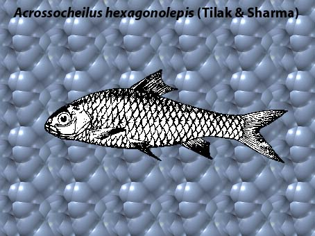

|
DIGITISED INVENTORY OF FRESHWATER FINFISHES AND SHELL FISHES OF INDIA |
Acrossocheilus hexagonolepis
Taxonomic
Details
----- Valid Name
----- Classification
----- Synonyms
----- Common Names
Other
Biological Details
----- Habit and
Habitat
----- Morphological
Features
----- Reproductive
Biology
---------- Breeding
season
---------- Breeding techinique
---------- Fishing methods
----- Biology
Stages of development:
Economic
Importance
----- Uses
----- Parts Used
Economic potenial to the country
----- ----- Fishery statistics
Miscellaneous Information
Literature
Name : Acrossocheilus
hexagonolepis
(McClelland ),1839

Family : Cyprinidae
Classification:
Phylum: Chordata Subphylum: Vertebrata
Class: Actinopterygii Subclass:Neopterygii
Division: Teleostei Subdivision:Euteleostei
SuperOrder: Ostariophysi Order:Cypriniformes
SubOrder: N.A. Family:Cyprinidae
Subfamily: Cyprininae
Synonyms: Acrossocheilus hexagonolepis
(McClelland ),1839
Neolissochilus hexagonolepis (McClelland ),1839
Barbus dukai Day,1878
Common Names: Katli
Distribution : North India, Assam, Himalaya and Darjeeling.
MORPHOLOGICAL FEATURES: Body graceful and moderately elongate, its depth 3 to 4.6 times in standard length. Head broad, its length 3.5 to 4.3 times in standard length. Eyes moderate. its diameter 2.6 to 4.2 times in head. Mouth truncate, its lower jaw edge sharp; lower labial fold widely interrupted in middle. Barbels two pairs, longer than orbit. Dorsal fin inserted nearer to the tip of the snout than to the base of caudal fin in younger stages. but in adults it is equidistant or often nearer to the base of caudal fin; its last unbranched ray osseous and strong. Scales large; lateral line with 28 to 32 scales; lateral transverse scale-rows 2.5 to 3.5 between lateral line and base of pelvic fin; predorsal scales 8 to 10. Sides of snout and cheeks studded with large tubercles.
Breeding season:N.A.
Breeding techinique: N.A.
Fishing methods:N.A.
BIOLOGY:N.A.
Stages of development:N.A. Uses:N.A. Economic
potential to the country This is an esteemed game fish which attains a
length of over 60 cm. In north Bengal the species has been observed up to 4.5 kg
while in Assam there are records of the species growing up to 11 kg. It is an
omnivorous feeder. The species is known to breed from April to October with a
peak in August to September. The male of this species mature at an early size
of9 cm. It breeds in ponds with running water. The Assamese use the petals of
the camel foot tree, Bauhenia purpurea as bait on the hook along with a cork
piece, so that the whole thing just floats on the surface of water as a dead
leaf and have this fish hooked.
Parts Used:
Talwar and Jhingran Inland Fisheries vol. 1
Pg.229